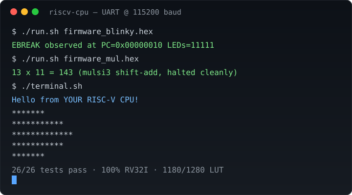

Start with a blinking LED. End with your own 32-bit processor running real compiled C — one small verified step at a time, on a ~$40 FPGA or entirely in simulation.
Five sentences that tell you everything: you build a real processor
from nothing; every step is tested before the next begins; standard compilers target
it on day one of completion; all numbers on this page come from executed runs in
bench/results.json; and the whole lab reproduces with one command.

Python 3 is all you need. Each command ends with a proof line — compare yours; they must match.
git clone <your-fork-url> blinker-to-riscv
cd blinker-to-riscv
python3 sim/test_golden_model.py # RESULT: 26 passed, 0 failed
python3 sim/check_rtl.py # ALL RTL STRUCTURAL CHECKS PASSED
python3 fw/generate_hex.py # FIRMWARE HEX VERIFIED (x8=31, x10=143)
python3 bench/bench.py # 100.0% coverage, CPI 4.25, 1180 LUTWith Docker (simulators + synthesis + compiler):
docker compose -f docker/docker-compose.yml up sim
Where is the instruction? How is it understood? Where are the numbers? What computes? How does it reach the world? Answer those and you can read any processor.
Byte address of the current instruction; +4 each step, or a jump/branch target.
7-bit opcode + function codes + immediates in R/I/S/B/U/J formats.
32 numbers, two read per cycle; x0 is always zero.
One shared subtract does math, compares, and branches; one shifter does all shifts.
Top address bits choose RAM, devices (LEDs/UART), or flash. One polite rule: wait when memory is busy.
00 RAM · 01 devices (one-hot) · 10 SPI flash execute-in-place.
| What | Value | Where it comes from |
|---|---|---|
| Directed tests | 26/26 pass | sim/test_golden_model.py |
| Instruction coverage | 100% of 39-item RV32I list | bench/results.json |
| Size (standard) | ~1180 logic units / 1280 budget | calibrated estimate; Docker synthesis measures |
| Size (minimal) | ~980 logic units | core only, no peripherals |
| Speed | 4.25 cycles/instruction bound | 4-state machine model |
| Firmware proofs | counter x8=31 · 13×11=143, halted | fw/generate_hex.py |
Build a CPU line by line; each evening ends with a passing test and something visible.
One concept per lecture from the journey map; homework writes itself.
Real LEDs Friday, real terminal Saturday, Mandelbrot art Sunday.
Whiteboard fetch→decode→execute with war stories and trade-offs.
IceStick · IceBreaker · ULX3S · ARTY · Tang Nano 9K. No board? Simulation covers everything above. With a board: synthesize, program, open a 115200-baud terminal, press reset. Roadmap: pipelined variant, interrupts, more boards, bigger demo gallery. Full instructions in the README.